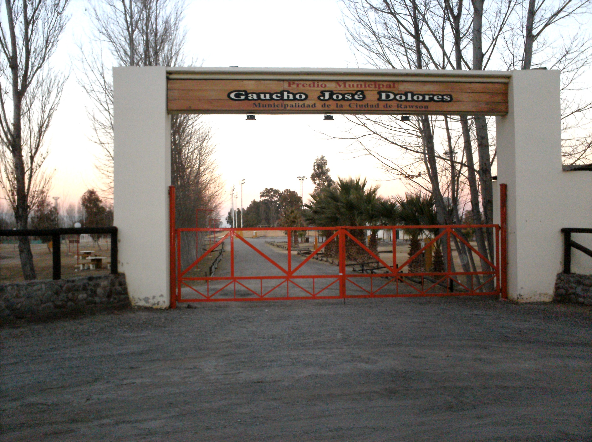

-
Fair Book and Popular Culture in Rawson
-

Square Centenario in Rawson
-

Space Gaucho José Dolores in Medano de Oro - Rawson
San Juan
The history of San Juan includes many transformations that have resulted in a province that combines a unique style and idiosyncrasy.
History
Let’s start at the beginning: On June 13 in 1562, the City of San Juan was founded by Juan Jufré in the Huarpe Valley of Tucuma. At the time, Juan Jufré used a plan with a simple layout, dividing it into 25 blocks, with the Plaza Mayor in the center. In 1594, San Juan had its seat in what is now known as Concepción, a district located in the Capital. But at the end of 1593, a flood of the San Juan River swept the city, which was moved 25 blocks from its original location. The city began to grow again and more strongly into what we know today as the Province of San Juan, composed of 19 departments. At the beginning of the 20th century, important works were carried out, such as the Cathedral, the Episcopal Palace and the Santo Domingo Church, the Government Palace, the Social Club and Casa España. An earthquake affected the city in 1894, causing serious material damage with significant damage to the buildings, creating rubble-covered streets. The Government Palace, inaugurated ten days before, suffered an almost complete destruction of the upper floor. Currently, the city of San Juan has modern buildings such as the Bicentennial Theater that is the icon of the Cuyo Cultural Center.

Geography
Many things make San Juan a different, attractive and unique province. One of those things is its particular geography, which leaves us with mental pictures that will never go away. San Juan is located in western Argentina and is part of the Cuyo Region. Its landscape offers snow peaks, mountains, rivers, valleys, and an open sky, which is the best way to light up all these. Humans have transformed the landscape, making the mountainous relief coexist with flat and habitable landscapes. The province is guarded by three large mountainous structures: the Andes Mountain Range to the West, the Pre-Mountain Range, and The Sierras Pampeanas to the East. The Andes Mountain Range is always present and extends, longitudinally, from north to south and to the west. In the center, next to the Mountain Range, is the Pre-Mountain Range, which goes along the province of San Juan. It is in the mountain summits that rivers arise, including Jáchal, Bermejo and the Valle River, fed by rains. The most important river carries the same name as the Province, the San Juan River, with three tributaries that originate in the snows of the Andes Mountain Range. It is born more than 4000 meters high and descends to 650 meters in the Tulum Valley. This descent can be used as a source of energy. The entire province benefits from the mighty waters of this river. In fact, in order to take full advantage of it, the Punta Negra and Los Caracoles dam and hydroelectric power plant was put into operation. This initiative promotes the growth of the province, guarantees a greater arable land, and increases the production of energy and priceless tourism development. San Juan has protected areas made up of more than 2 million hectares, including: San Guillermo National Park – San Guillermo Biosphere Reserve, Ischigualasto Provincial Park – Natural Heritage Site, Valle Fertil Provincial Park –Don Carmelo Multiple Use Reserve, President D. F. Sarmiento – Cerro Alkazar Natural Monument – Los Morrillos Wildlife Private Refuge – Lagunas de Guanacache Ramsar Site – El Leoncito National Park –Loma de las Tapias Natural Park and Protected Landscape –Pedernal Protected Landscape.
Events in next months
Contact information
- Address: Proyectada S/N - Rawson - San Juan - Argentina
- Phone: +54 9 264 xxxxxxx
- Email: noreply@email.com